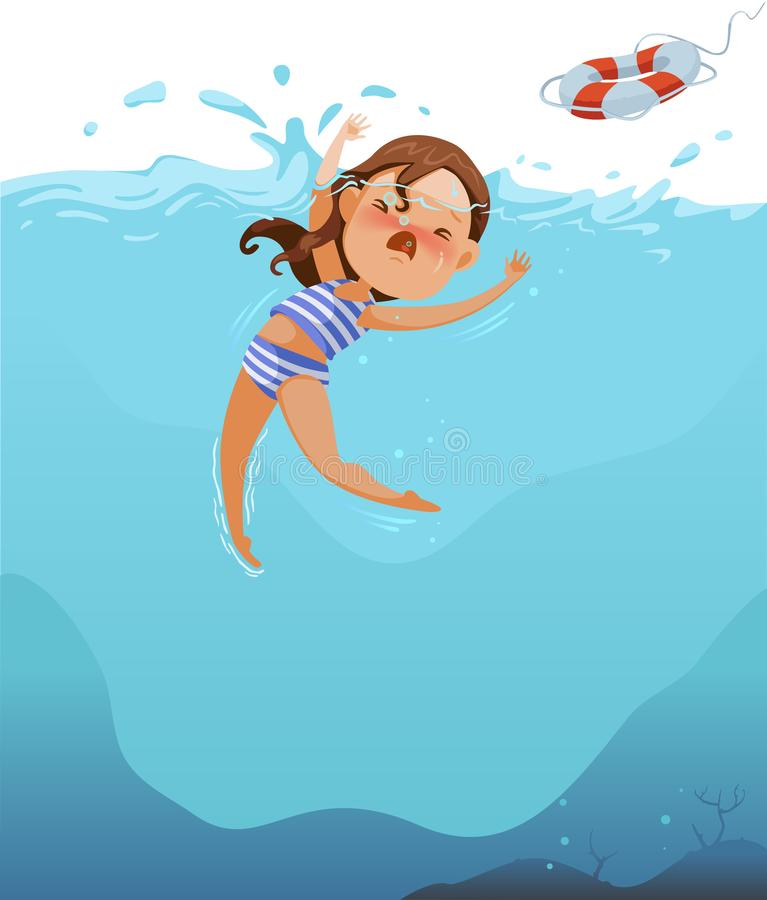

Drowning
Drowning is a leading cause of death for toddlers. On average, 3 children aged from birth to 4 years drown every year in Victoria. Most drowning deaths occur in backyard swimming pools, bathtubs and spas.
Approximately two-thirds of toddler drowning deaths occur in regional Victoria, typically in dams, creeks, rivers, irrigation channels and water troughs, as well as home pools and baths.
It is estimated that for every child that drowns, another 10 are hospitalised for non-fatal drowning, and may have long-term effects such as permanent brain damage.
How to Protect?

Away from the drowning we can keep distance between children and water. There are many kinds protecting ways are available. Children have to wear Life Jacket that perfectly fit them. That can gives them more buoyancy to help you stay afloat in water.
- Lear basic swimming and water safety skills
- Lear CPR
- Wear Life Jacket
- Swim with a buddy, friend or cusion
- Keep eyes on your child